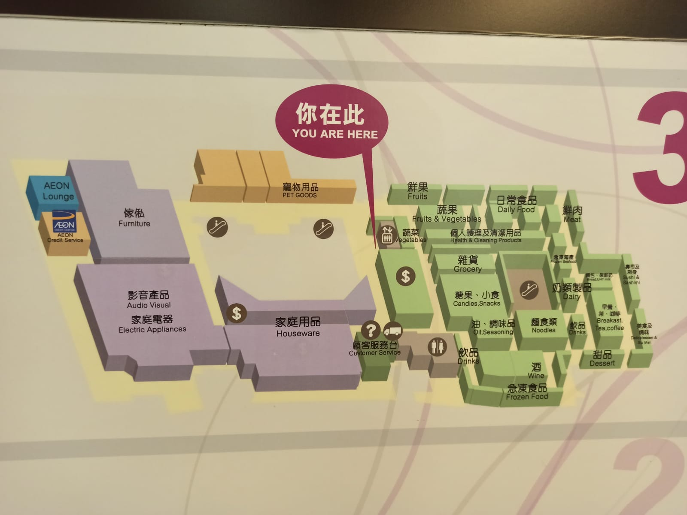
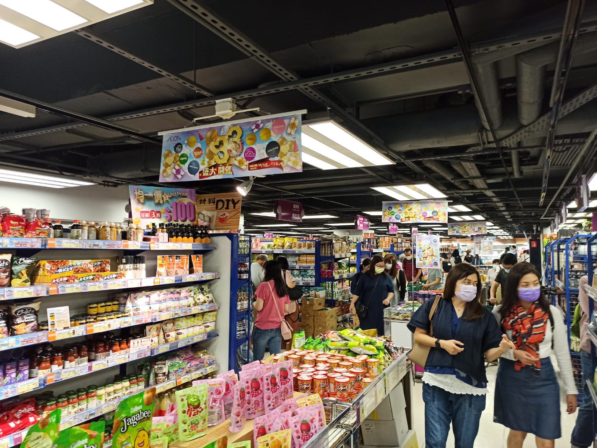
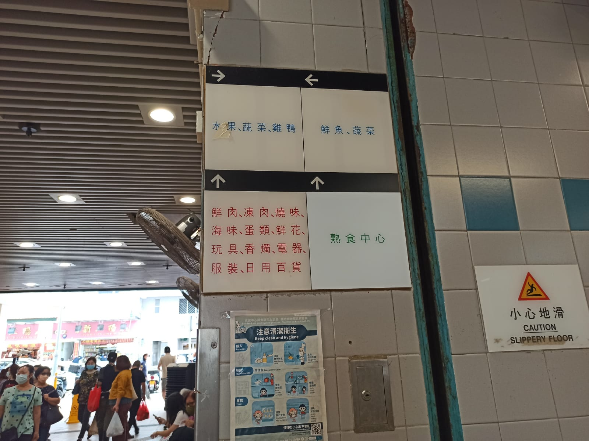
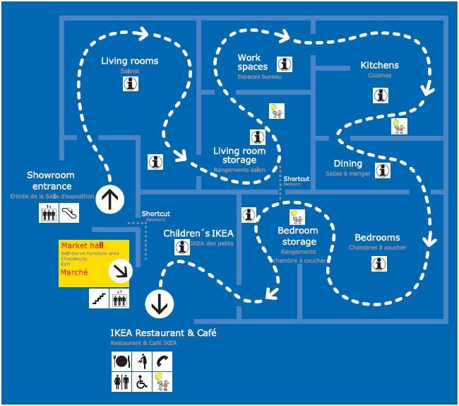
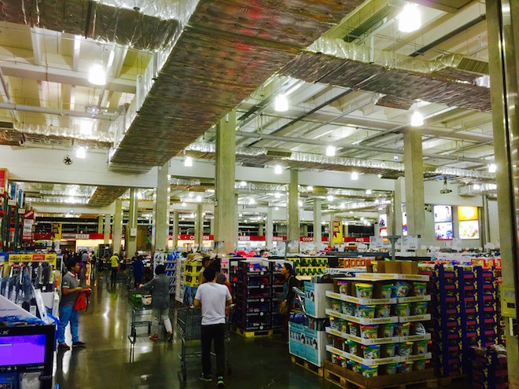
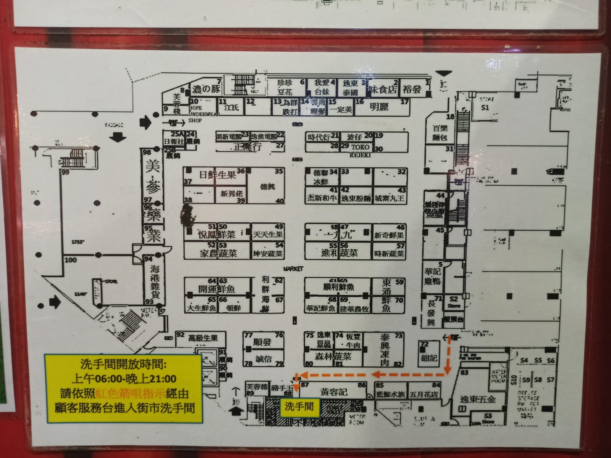
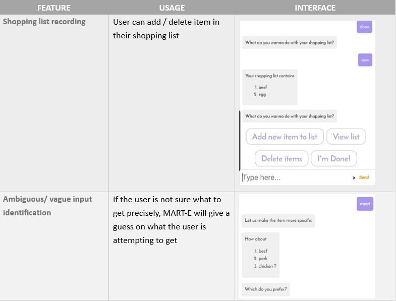
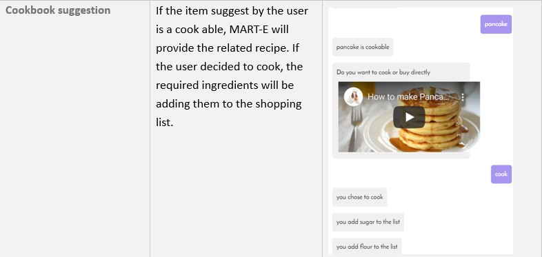
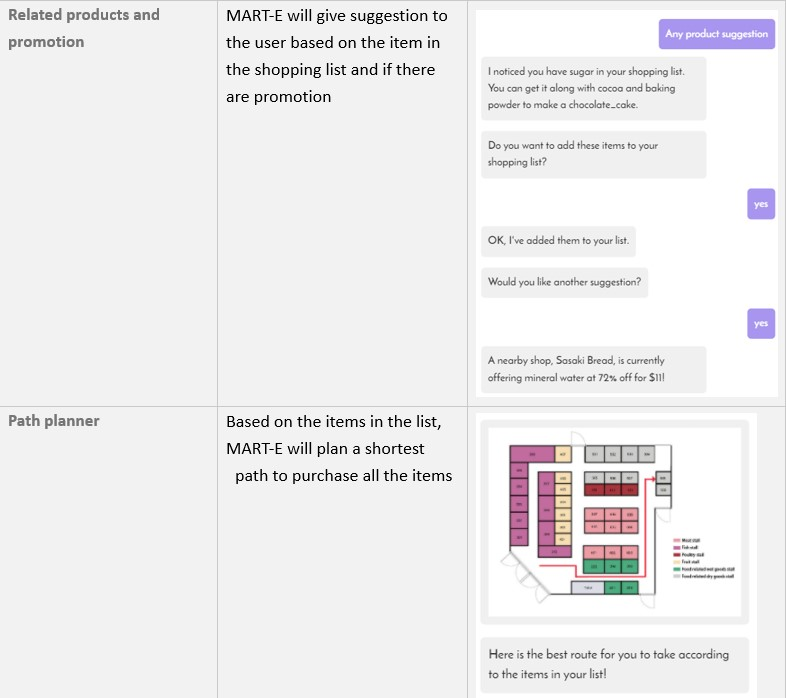
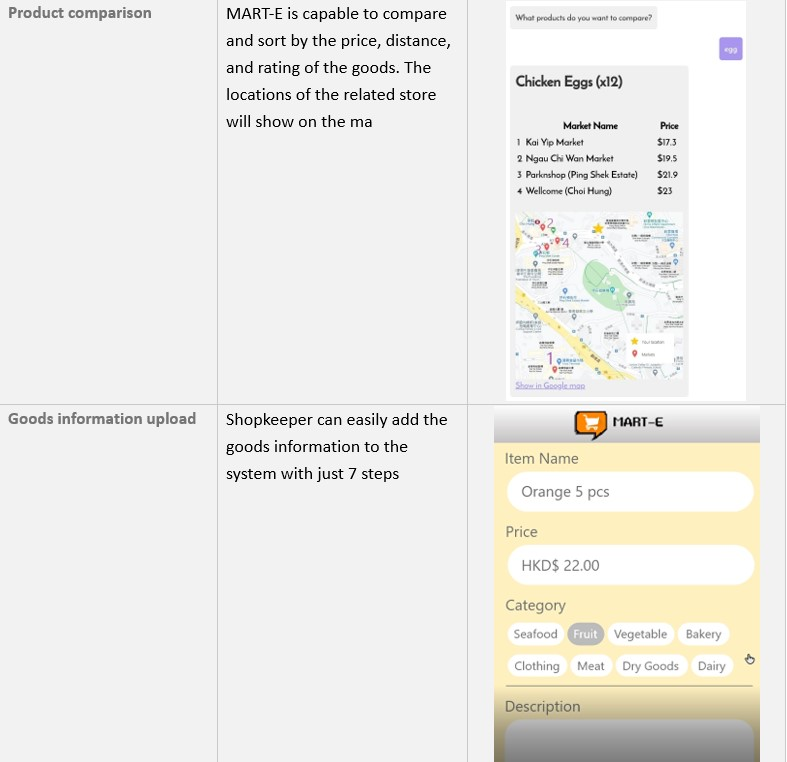

About MART-E
Smart Shopping tools for the customer and shopkeeper
Project MART-E is an online chat bot that aims to assist user to shop effectivly and answer to user enquries. By providing product comparison, route schedule, shopping list and suggestions to help user to perform a more efficient and well planned shopping.
Prototype
Featuring Function
- Basic chatbot communcation
- Shopping list recording
- Ambiguous/ vauge input identification
- Cookbook suggestion
- Related products and promotion
- Path planner
- Product comparison
- Goods information upload
| Location | Observation | Image |
|---|---|---|
| Super market | - The map is separated into multiple sector by catorigeries
- Only give a general idea of where the item is located but not precise position - At the correct area there are many sub columns - Finding a specific item is hard with that map |
  |
| Wet market | -The indicator have no graphical presentation on the floor plan layout
- Multiple stores are selling same type of goods, but in different location, customer need to spent long time to explore the whole market and compare the quality and price |

 |
| Night market | - No real map or layout to guide customers
- Stores are clustered and other customers may block the user in finding what they want. - Each store does not have a banner or title meaning customers have to look at the items specifically |
|
| Huge scale warehouse | -The store is too large, user can easily get lost
-If the user have not pior understanding of the floor plan layout, customer may end up with spenting long time to go the destination while there is actually a shorter path |
  |
Mind Map

When we first ideate the project idea, we first peek into the existing products in the market. Such as Google map and shopping mall's map layouts. However most of the just give a abstract layout with insufficant information for each store.
Then we look into the user experience, customer fail to shop effectivly is due to they are not familiar with the market. Thus, time is being wasted to search and explore the market with luck.
To combin both points and create an unique product, we decide to design an application to aids the customers to shop effectivly with ease.
Interpret
Experiment

Field trip to Wet Market
After visit the wet market, we have sereval findings:
- The wet market usually do not have a clear map layout, customers will get lost easily if they never come before
- The map is market are usually written local language, foreigner might not understand
- Most of the maps for market are not searchable by internet
- Customer will not know what can they buy there, if no pior knowledge is given
Storyboard


Ideate
These are the functions in our design:
   WOW Factors
There are mainly 4 WOW factors in Handler to make it stands out from other current proudcts.
Ambiguous terms defining
There are many case the user do not know the exact wording for the item. Which we decided to adopt the same logic for search engine, instead of having high precision, we make use of recall to get "somewhat" relevant result to user to guess his/her inputs. Then MART-E will go deep into the category and suggests more narrowed down result to the user, to attempt guessing on the user's needs.
Cookbook
Users may just have a rough though on cooking, which the method and details are not clear. As such, MART-E can suggest the required recipe to the used. To guide the user how to cook with a video support and help user the add all the required items into their shopping list.
Path planner
There are mainly 2 function for path planner:
1. Shortest path planning: With the given list, MART-E will suggest a shortest path to go to all the required store.
2. Real time path planning: When the user is lost inside the market, MART-E will locate the user location and lead he/she to thier destination with the shortest path.
Since we understand is not realistic to ask the user go to find map when they are already lost. Such having this function can help the user to find their path easily, espsically if the user is not trying to seek help.
Talk to someone that is NO ONE
According to our research, at least 44% of the population tends to not to seek any help when they are lost. On top of that there are also groups who are suffering from language barrier and unable to conduct verbal communication. With MART-E, no matter the user is with high pride/ cannot speak in local language/ disable can enjoy the aid from MART-E with out being bothering other.
Personal Diary
Oct 26
I went to wet market and observe the design of the market, the instruction bill borad only give a rough direction, yet I don't really feel like to ask anyone to help me, since it feels like causing too much trouble to others. Also I am that type of person always forget thing, which made me need to go back to market again to buy as I missed something.
Oct 27
I bring up the idea of Smart shopping list, that help us to record down all the items in the shopping list. Then we start to expands the features to prices comparsion, path finding, suggestion, etc.
Oct 29
The basic framework of the chatbot design is done, however the input and responds method is still in a sense of inhuman, in such we need to rephase the responds of MART-E to make it more natural.
Nov 1
Me and Benedict went to Fu Tung wet market and conduct user testing, we tried on someone who have never been to this wet market and record the time they need to locate a certain item. With given the pior knowledge of the market layout with MART-E, user can locate the item faster. But we also acknowedge one point which is many shopkeeper are in age range 60~80. They might not fit to the lastest tech so well. So to solve this issue, we make the Item register system with 7 steps only, to lower down the diffculties for user to sdopt into our design
Contribution
In this project, I am the the one who raise the inital idea of Smart shopping list and do research in the begining of the project. In the later part, I was in charged to implement the Cookbook function and the Item register. I also cooperate with Benedict to make the demo video for the presenation.
Personal Reflection
In project Handler
- I learnt how to code with chat bot
- I learnt how to do site visit and stay there for looong time for observation
- I learnt to refine our design by involve multiple stages testing with feedbacks
This project was a bot rush for us, since the entrie design and protyping process is really short, the time was only barely enough to create the protype and perform a few tests. But this is really like a real working environment whereas the realility is never on your sides. Which gives me an idea that through the whole design process, observation is the most important part. Is better to spent more time to find the root of the problem and think of a solution to solve it, rather than the complete all the function. People are more focus on the WOW / something they have not seen before.
Also Glitch is not a good platform, it crash all the time and sometimes it end up with not updating anymore. Is good that can cooperate with other but it have low stability.